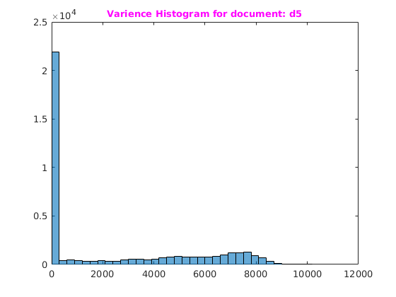
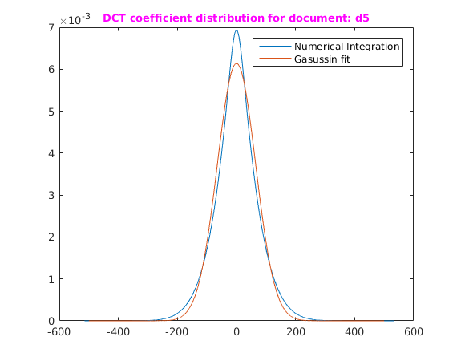
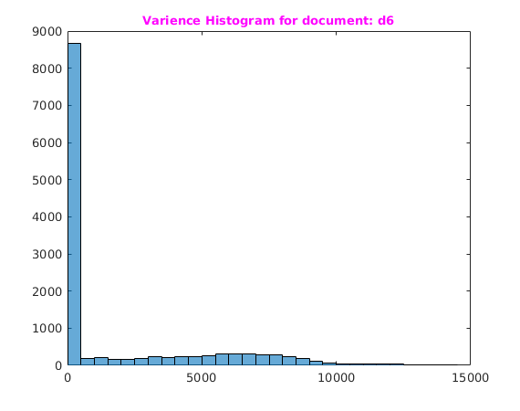
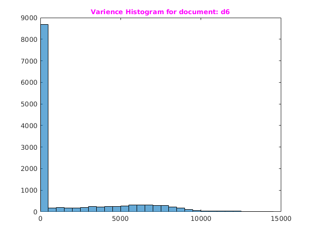
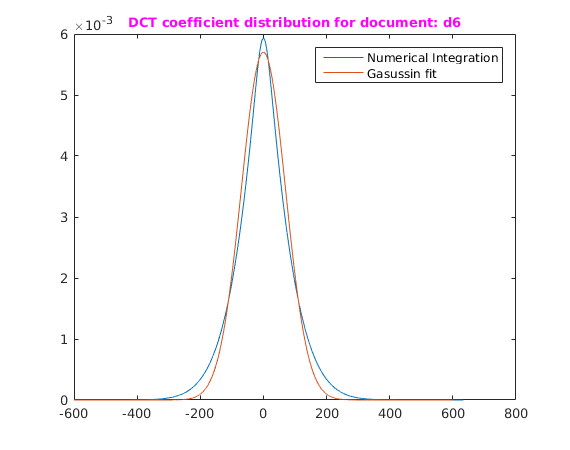

DCT Distribution for Document
Assignment 5-1
Rollno: 163059009, 16305R011
Contents
- 1. Init: First Document
- 1.1 Divinding image into patchs + patch dct coeffiencts
- 1.2 Histogram of Block variance
- 1.3. Computing P(F(u,v))
- 1.4 Plotting the P(F(u,v))
- 2. Init: Second Document
- 1.1 Divinding image into patchs + patch dct coeffiencts
- 1.2 Histogram of Block variance
- 1.3. Computing P(F(u,v))
- 1.4 Plotting the P(F(u,v))
1. Init: First Document
file='../data/d5.jpg';
img=imread(file);
[H,W]=size(img);
1.1 Divinding image into patchs + patch dct coeffiencts
patchSize=8; [vecPatch,dctCoffvec]=genPatchsAndDCTCoeff(img,patchSize);
1.2 Histogram of Block variance
varPatches=var(vecPatch); h=histogram(varPatches); title('\fontsize{10}{\color{magenta}Varience Histogram for document: d5}'); limits=h.BinLimits; a=limits(1); b=limits(2); fprintf('Uniform distribution a:%f b:%d\n',a,b);
Uniform distribution a:0.000000 b:10200
1.3. Computing P(F(u,v))
vec=dctCoffvec(2,:);uvec=vec(:);uvec=unique(uvec); n=numel(uvec); disCoeffs=zeros(n,1); const=1/(sqrt(2*pi)*(b-a)); f= @(s,I) (1./sqrt(s)).*(exp((-(I^2))./(2.*s))); tic for i=1:n disCoeffs(i) = const*(integral(@(s)f(s,uvec(i)),a,b)); end toc fprintf('Completed..\n');
Elapsed time is 10.579964 seconds. Completed..
1.4 Plotting the P(F(u,v))
figure('name','DCT coefficient distribution for document: d5'); plot(uvec,disCoeffs), hold on x = [-500:.1:500]; norm = normpdf(x,0,65); plot(x,norm) hold off; legend('Numerical Integration','Gasussin fit') title('\fontsize{10}{\color{magenta}DCT coefficient distribution for document: d5}');
2. Init: Second Document
file='../data/d6.png';
img=imread(file);
[H,W]=size(img);
1.1 Divinding image into patchs + patch dct coeffiencts
patchSize=8; [vecPatch,dctCoffvec]=genPatchsAndDCTCoeff(img,patchSize);
1.2 Histogram of Block variance
varPatches=var(vecPatch); h=histogram(varPatches); title('\fontsize{10}{\color{magenta}Varience Histogram for document: d6}'); limits=h.BinLimits; a=limits(1); b=limits(2); fprintf('Uniform distribution a:%f b:%d\n',a,b);
Uniform distribution a:0.000000 b:14500
1.3. Computing P(F(u,v))
vec=dctCoffvec(2,:);uvec=vec(:);uvec=unique(uvec); n=numel(uvec); disCoeffs=zeros(n,1); const=1/(sqrt(2*pi)*(b-a)); f= @(s,I) (1./sqrt(s)).*(exp((-(I^2))./(2.*s))); tic for i=1:n disCoeffs(i) = const*(integral(@(s)f(s,uvec(i)),a,b)); end toc fprintf('Completed..\n'); %sfile='../input/d6.png';
Elapsed time is 7.846629 seconds. Completed..
1.4 Plotting the P(F(u,v))
figure('name','DCT coefficient distribution for document: d6'); plot(uvec,disCoeffs), hold on x = [-600:.1:600]; norm = normpdf(x,0,70); plot(x,norm) hold off; legend('Numerical Integration','Gasussin fit') title('\fontsize{10}{\color{magenta}DCT coefficient distribution for document: d6}');